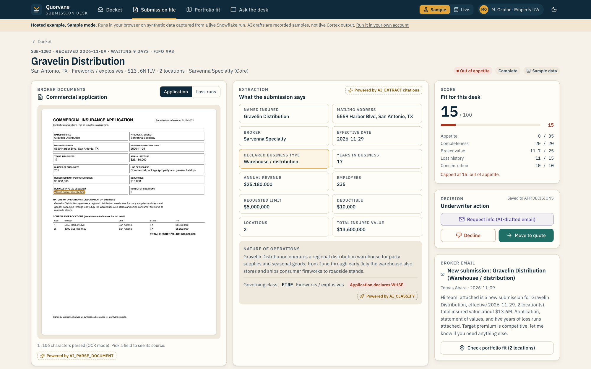
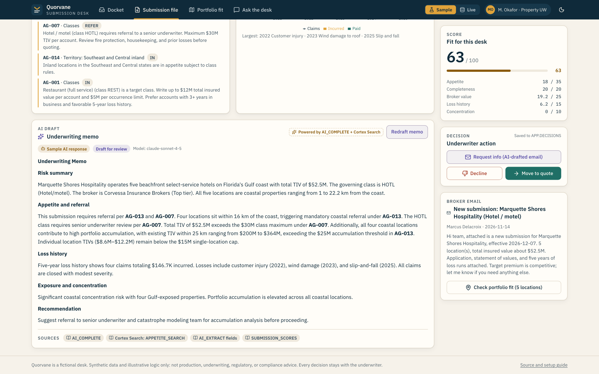
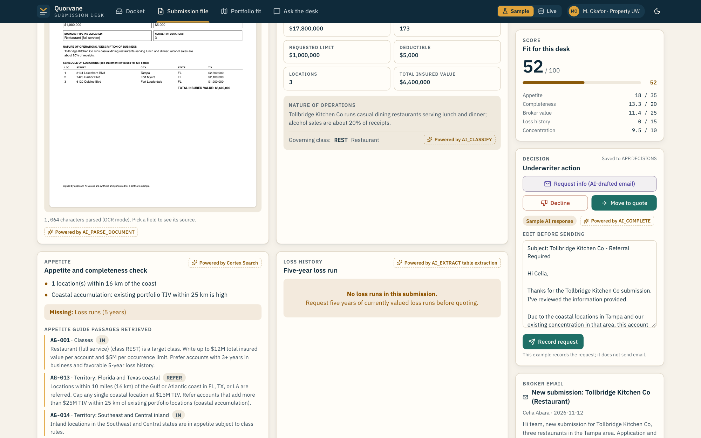
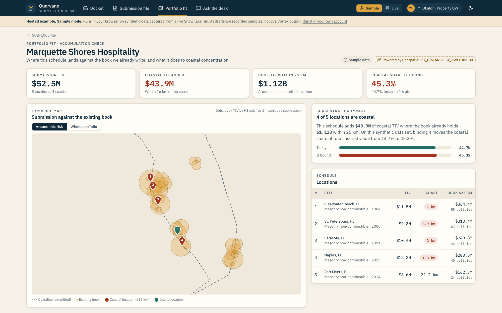

Stop working the submission pile in the order it arrived. Work the best fit first.
Underwriters get more broker submissions than they can quote, and most queues run first in, first out. This example reads every broker packet in Snowflake, extracts the fields and loss runs, checks appetite and completeness, measures coastal concentration, and ranks the docket by fit. The underwriter still makes every decision.
- No-account mode
- Runs in the browser on synthetic data
- Live mode
- Any edition; Cortex AI, Search, Analyst, Agents
- Setup time
- About 3 minutes (186 s measured)
- Cost
- About 0.1 warehouse credits (estimated), plus AI usage
- 1Kelridge Office Partners In appetiteCharlotte, NC · Office · FIFO #13099
- 2Lanmore Fabrication In appetiteRaleigh, NC · Light manufacturing99
- …Marquette Shores Hospitality Refer5 Gulf coast hotels · +$43.9M coastal TIV63
- …Tollbridge Kitchen Co Missing 1Tampa, FL · no loss runs52
- …Gravelin Distribution Out“Warehouse” storing fireworks15
Synthetic data, illustrative logic. Quorvane, the desk in this example, and every insured, broker, carrier and person are fictional; the forms are synthetic layouts. This is not underwriting, regulatory, or compliance advice and not a production system. Scores and drafts are suggestions for an underwriter to review.
One docket for the desk, the manager and cat management
Commercial underwriters
A docket ranked by fit, each file's fields already extracted with the source highlighted, and a memo draft to edit.
Underwriting managers
See what's waiting, what's incomplete and what's out of appetite, and ask questions about the pipeline in plain language.
Portfolio and cat management
See how a new schedule of locations adds to coastal concentration before it's quoted.
Four files from this morning's docket
Screenshots of the running app on its synthetic data set: 150 broker submissions to the fictional Quorvane desk, 136 still open on the business date.

The docket, ranked by fit
Every submission gets a fit score from appetite, completeness, broker value, loss history and concentration. On this synthetic data set, Kelridge Office Partners, a clean office risk from a top broker, ranks first even though it is 130th in first-in, first-out order.
AI_EXTRACT · AI_CLASSIFY · SQL view
An out-of-appetite class hidden in the description
The application declares a warehouse, but the operations description mentions seasonal fireworks storage. AI_CLASSIFY assigns the fireworks class, which the appetite guide puts out of appetite. Pick any extracted field to see where AI_EXTRACT found it on the page.
AI_PARSE_DOCUMENT · AI_EXTRACT · AI_CLASSIFY
Loss runs and a memo draft that cites the guide
The loss-run table is extracted from the PDF and charted. Cortex Search finds the appetite rules that apply, and AI_COMPLETE drafts a memo that cites them, revealed as it is written, for the underwriter to edit.
AI_EXTRACT · Cortex Search · AI_COMPLETE
Request what's missing, in one click
This restaurant submission arrived without loss runs. The app drafts a specific request to the broker, the underwriter edits it, and the decision is recorded. Decline with a reason and move to quote work the same way.
AI_COMPLETE · decisions table
Portfolio fit before you quote
Five beachfront hotels plotted against the existing book. Snowflake measures each location's distance to the coast and the book's TIV within 25 km, and shows how binding the risk changes the coastal share of total insured value.
Geospatial · H3
Ask the pipeline in plain language
A question becomes SQL on a semantic view of the pipeline. On this data set it returns 8 Florida restaurants above $5M TIV received in November, with their fit scores and appetite.
Cortex Agents · Cortex AnalystEvery step runs in Snowflake
Each capability below ran in Live mode in a Snowflake account in November 2026.
| Step | Snowflake capability | What it does here |
|---|---|---|
| Ingest | Git repository clone, stage | Loads the synthetic PDFs and CSVs from the public repository. No upload step. |
| Read documents | AI_PARSE_DOCUMENT | Full text of every application (OCR mode). |
| Extract fields | AI_EXTRACT with citations | Application fields, each with the page box where it was found. Table extraction reads the five-year loss runs. |
| Find the class | AI_CLASSIFY | Assigns the governing class from the operations description, so a hazardous activity can't hide behind the declared class. |
| Appetite and fit | SQL view | Class, territory, TIV, loss and completeness rules, plus the five-part fit score. |
| Concentration | Geospatial functions and H3 | Distance to coast, book TIV within 25 km, exposure by H3 cell. |
| Appetite guide | Cortex Search | Finds the guide passages that apply to each submission. |
| Memo and email | AI_COMPLETE | Drafts from the extracted facts and guide passages, saved for review. |
| Ask | Cortex Agents, Cortex Analyst, semantic view | Turns questions about the pipeline into SQL and answers them. |
On this synthetic data set, AI_EXTRACT matched the generator's values for all 150 insured names and total insured values, and for all 745 loss-run rows. Real broker documents are messier; measure accuracy on your own keyed sample before relying on it.
Try it now, then run it in your account
No account
Open the hosted example, or run it locally with Node.js 20.19 or later:
git clone https://github.com/sfc-gh-ooral/sfguide-underwriting-submission-intelligence.git cd sfguide-underwriting-submission-intelligence npm install npm run dev
AI drafts in this mode were recorded from a live run and are labeled Sample AI response.
Your Snowflake account
- Run
sql/setup.sqlin a Snowsight worksheet. It creates a dedicated database, an XSMALL warehouse and a least-privilege role, loads the synthetic files and runs the document AI. - Register a key pair for your user and copy
.env.exampleto.env.local. - Run
npm run devand switch to Live. Each screen shows the live role and measured latency. - When you're done, run
sql/cleanup.sql.
The README lists every object created, the expected cost and the full steps.
Customize with Cortex Code
"Load my appetite guide and turn it into rules plus a searchable index. Show me ambiguous rules."
"Extract 30 of my sample submissions and measure field accuracy against my keyed data."
"Weight the fit score toward my target classes and explain each component."
Read this before you adapt it
- The fit score and appetite rules are illustrative weights, not a pricing or rating model.
- The documents are clean, one-page synthetic layouts. Scanned or handwritten submissions need more review.
- The coastline is a simplified line of 39 points, and the map is a plain longitude/latitude plot with no base map.
- Results such as "ranks first" and "8 restaurants" are planted stories on this synthetic data set.
This is an illustrative example provided as is. It is not an official Snowflake product, it isn't supported by Snowflake Support, and it contains no customer data. Apache 2.0 license.